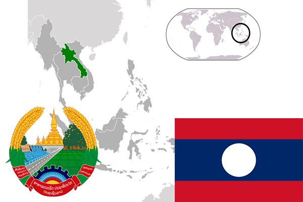

To`liq nomi: Laos Xalq Demokratik Respublikasi
Region: Janubiy-sharqiy Osiyo
Qonunchilik shakli: Respublika
Mustaqillik kuni: 19-iyul 1949-yil (Fransiyadan)
Poytaxt: Ventyan
Maydoni: 236 800 km² (dunyoda 81 -o`rinda )
Chegaradosh davlatlari: Xitoy, Vetnam, Kambodja, Tailand, Myanma
Aholisi: 6,758,353 (dunyoda 104 - o`rinda, 2016 -yil roʻyxat)
Aholi zichligi: 26,7/km²
Aholining o`rtacha yoshi: 55,9 yil (58,0 ayollar, 53,8 erkaklar)
Rasmiy tili: Laos tili
Dini: Buddizm
Pul birligi: Laos kipi
Telefon prefiksi: +856
Internet domen: .la
Xalqaro tashkilotlarga a`zoligi: BMT (1955 – yildan)
Dengiz va okeanlarga chiqishi: yo`q
YIM: Butun: $ 44.639 mlrd, Jon boshiga $ 6,115 (2017 - yil roʻyxati)
Yirik shaharlari: Ventyan, Pakse